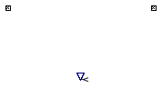

Table of Contents
- User's Guide
- BCs**
- Sensors
- Assemblies**
- Regions**
- Subregions
- Connectors
- Characteristics
- Units
- Quantities
- BaseClasses
- **Please check back soon or contact kdavies4 at gmail.com.
Download
- Latest: FCSys-2.0.zip (**Check back soon.)

| Name | Description |
|---|---|
| Temperature | Sensor for temperature difference (adiabatic condition) |
| HeatRate | Sensor for heat flow rate (isothermal condition) |
| Base classes (not for direct use) |

| Type | Name | Default | Description |
|---|---|---|---|
| SensorType | sensorType | BaseClasses.SensorType.Tempe... | Type of sensor |
| Type | Name | Description |
|---|---|---|
| Thermal | negative | Thermal connector for the negative face |
| Thermal | positive | Thermal connector for the positive face |
model Temperature "Sensor for temperature difference (adiabatic condition)" extends BaseClasses.PartialSensor(final sensorType=BaseClasses.SensorType.Temperature, redeclare FCSys.Connectors.RealOutput y(final unit="l2.m/(N.T2)", displayUnit="K")); equation y = negative.T - positive.T "Measurement"; 0 = negative.Qdot "Adiabatic condition"; // Note: In conjunction with the energy rate balance, this means // that both faces are adiabatic.end Temperature;
| Type | Name | Default | Description |
|---|---|---|---|
| SensorType | sensorType | BaseClasses.SensorType.HeatR... | Type of sensor |
| Type | Name | Description |
|---|---|---|
| Thermal | negative | Thermal connector for the negative face |
| Thermal | positive | Thermal connector for the positive face |
model HeatRate "Sensor for heat flow rate (isothermal condition)" extends BaseClasses.PartialSensor(final sensorType=BaseClasses.SensorType.HeatRate, redeclare FCSys.Connectors.RealOutput y(final unit="l2.m/T3")); equation y = negative.Qdot "Measurement"; negative.T = positive.T "Isothermal condition";end HeatRate;